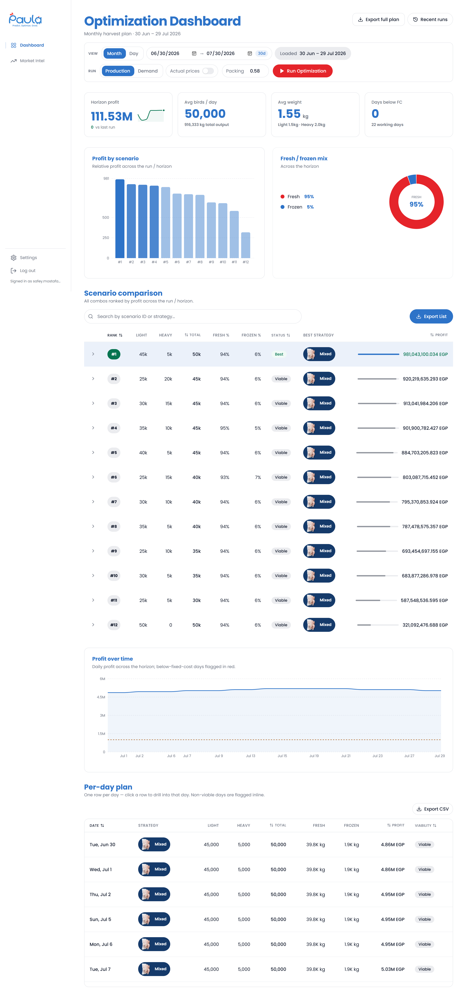
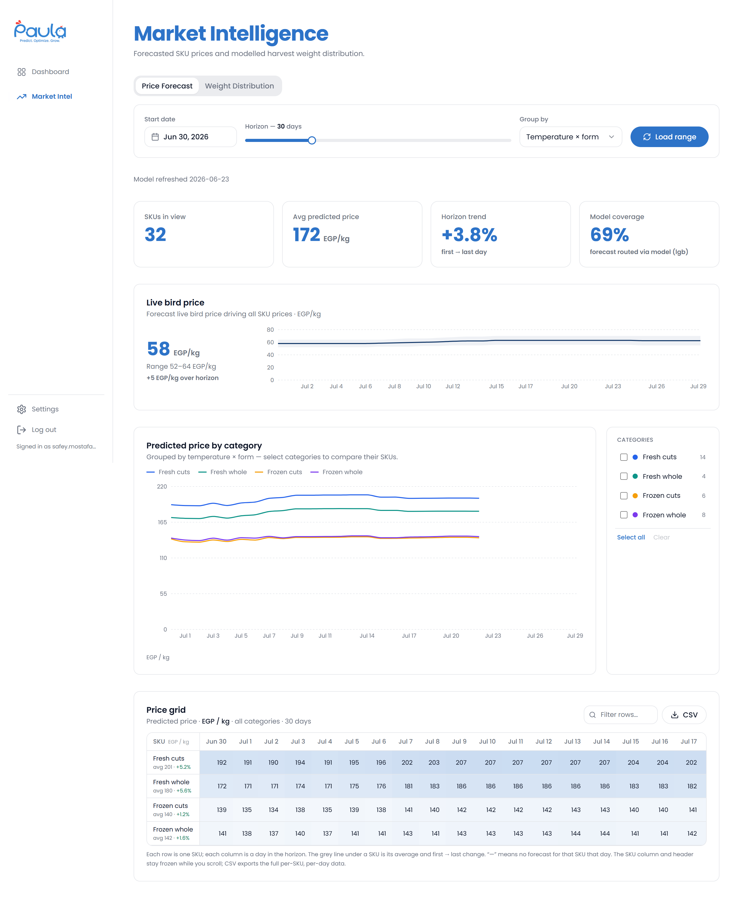

Paula Operations Manual
Cairo 3A · Module 4 — the dual-mode optimization engine that decides each morning how many birds of which weight to slaughter to maximise profit. The cockpit surfaces the recommended harvest plan, the ranked scenarios behind it, and the market-price forecast that informs it — all behind a single sign-in.
- 3 working screens + sign-in
- Desktop ≥ 1280 px
- EGP · kg · Cairo time
Tip: hover a numbered marker on a screenshot to highlight the matching callout. Click any screenshot to zoom.
Sign In
Paula is access-controlled. Enter the operator credentials to open the cockpit. Your session is remembered for the browser tab until you log out.

- Brand panel The Paula "Smart Optimize Hub" mark — confirms you're on the right cockpit.
- Username Your operator email, supplied by the Datalentech team.
- Password Use the eye icon to reveal what you typed before submitting.
- Sign in Opens the Dashboard. The Log out link sits at the bottom of the sidebar.
Dashboard
The home page. Shows the recommended harvest plan across the horizon and the ranked scenarios behind that recommendation, with a day-by-day breakdown underneath.

- Header & export Page title, the harvest-plan date range, Export full plan, and Recent runs history.
- View & run controls Month / Day view, the start–end date range, the Production / Demand mode, Actual prices and Packing toggles, and the red Run Optimization button.
- KPI row Horizon Profit · Avg Birds / day · Avg Weight · Days below FC.
- Profit by scenario Every scenario ranked by profit. The winner is the tallest bar; weaker options fade out.
- Fresh / frozen mix Donut of the fresh-vs-frozen share across the whole horizon.
- Scenario comparison Full ranked table of every Light + Heavy combination — profit, status, and best strategy. Searchable and exportable.
- Profit over time Daily profit across the horizon. Any day that falls below the fixed-cost line is flagged in red.
- Per-day plan One row per working day — strategy, Light / Heavy birds, output kg, and profit. Click a row to drill into that day.
Market Intelligence
The forecast that feeds the engine. Shows the modelled live-bird price and the predicted selling price per product category across the planning horizon, so you can sense-check the plan against where the market is heading.

- Header & tabs Switch between the Price Forecast view and the Weight Distribution view.
- Range controls Pick a start date, set the horizon (days), choose how to group, then Load range to refresh the forecast.
- KPI row SKUs in view · Avg predicted price (EGP/kg) · Horizon trend · Market coverage.
- Live bird price The modelled farm-gate live-bird price driving all downstream SKU prices.
- Predicted price by category Forecast selling price per category over time. Use the legend on the right to compare or isolate categories.
- Price grid The full day-by-day predicted price table per category. Export to CSV.
Settings
Manage backend access and review — read-only — the parameters and cutting recipes the optimization engine runs on. This is the page to open the first time a browser connects to the live backend.

-
API Access
Paste the backend API key for this browser. It's sent as
X-API-Keyon every live request. Use Test connection to confirm it works, then Save. - Configuration A live, read-only view of the engine's parameters, grouped by namespace (capacity, calendar, costs, …). Pick a namespace to inspect its keys.
- Cutting Options The active cutting recipes from the engine, grouped by option (Chest Deboning, Whole Chicken, Whole Leg Cutting, …) with per-product yield and supply percentages.
A typical day with Paula
A common morning routine takes 5–10 minutes.
- Sign in — open Paula and enter your operator credentials.
- Land on the Dashboard — the latest optimization run is already loaded for the current horizon.
- Glance at the KPI row — Horizon Profit, Avg Birds / day, Avg Weight, and Days below FC.
- Scan Profit by scenario — confirm the recommended scenario and check whether any options fall below the fixed-cost line.
- Read the per-day plan — make sure each day's strategy and Light / Heavy split matches production capacity; click a day to drill in if a number looks off.
- Open Market Intelligence — sanity-check the plan against the forecast live-bird price and the predicted price per category for the days ahead.
- Re-run if needed — adjust the range or mode on the Dashboard and press Run Optimization, then Export full plan.
- Share the approved plan with the packing floor and freezer teams.
First time on a new browser? Open Settings → API Access, paste the backend key, Test connection, and Save before the live data will load.
Glossary
- EGP
- Egyptian pound — currency unit throughout Paula.
- Horizon
- The planning window the optimization run covers — a range of working days (e.g. 30 days).
- Light bird
- Chicken in the lighter weight class, average ≈ 1.5 kg.
- Heavy bird
- Chicken in the heavier weight class, average ≈ 2 kg.
- Fresh
- Product sold this month, not frozen.
- Frozen
- Product moved to cold storage to be sold next month or later.
- Strategy
- How a day's output splits across fresh and frozen: All Fresh, All Frozen, or Mixed.
- Scenario
- One combination of Light + Heavy birds the engine evaluates each run.
- Production mode
- Default mode — the engine maximises profit from available supply.
- Demand mode
- Alternative mode that biases the plan toward a supplied demand forecast.
- Fixed cost (FC)
- The fixed-cost threshold the operation must beat. Currently 41.4 million EGP.
- Best
- The scenario with the highest expected profit — the engine's recommendation.
- Viable
- A scenario that clears the fixed cost but is not the top performer.
- Below FC
- A day or scenario whose expected profit is below the fixed-cost threshold; flagged in red.
- Live bird price
- The modelled farm-gate price per kg of live chicken that drives all downstream selling prices.
- Market coverage
- Share of forecast SKUs the model has a reliable price for.
- Namespace
- A group of related engine parameters on the Settings page (e.g. capacity, calendar, costs).
- Cutting option
- A cutting recipe the engine can apply (e.g. Chest Deboning, Whole Chicken), defining how a carcass splits into products.
- API key
- The backend access key entered in Settings, sent as
X-API-Keyon every live request.